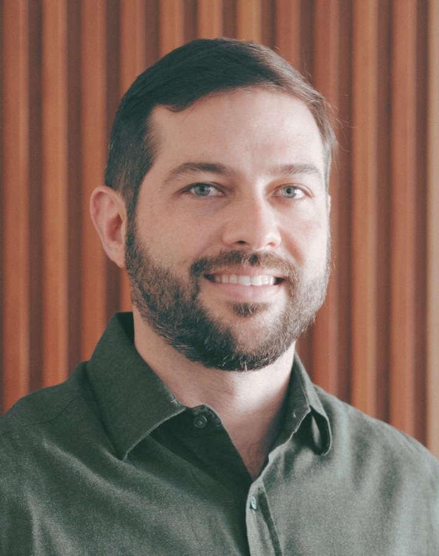

Felipe S. Iachan
I am an Associate Professor of Economics and Finance at FGV EPGE. I hold a PhD in Economics from MIT, obtained in 2012.
My research examines how financial, informational, and institutional frictions influence the macroeconomy and asset prices.
I have studied portfolio choice and asset pricing, labor market dynamics and inequality, monetary policy transmission, credit constraints and investment, coordination in financial markets, and the role of informality in housing and labor markets.
Research Interests: Macroeconomics, Financial Economics
